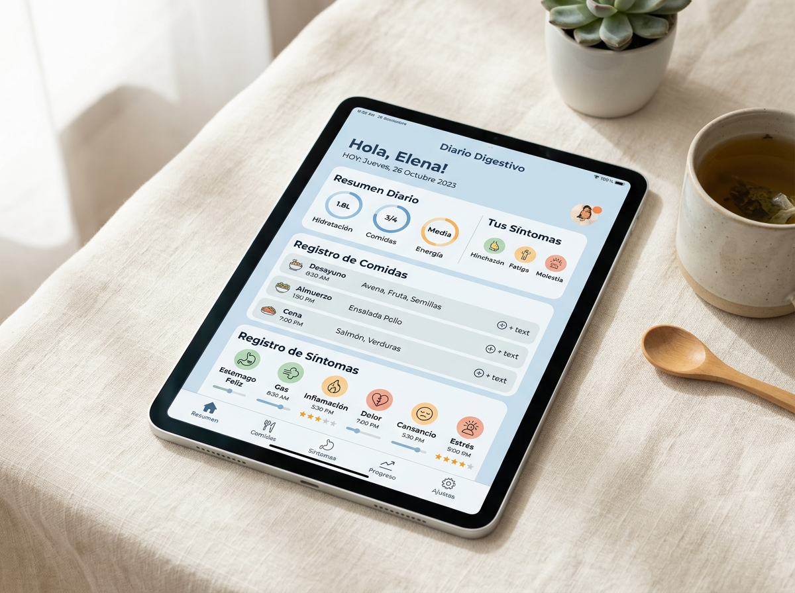
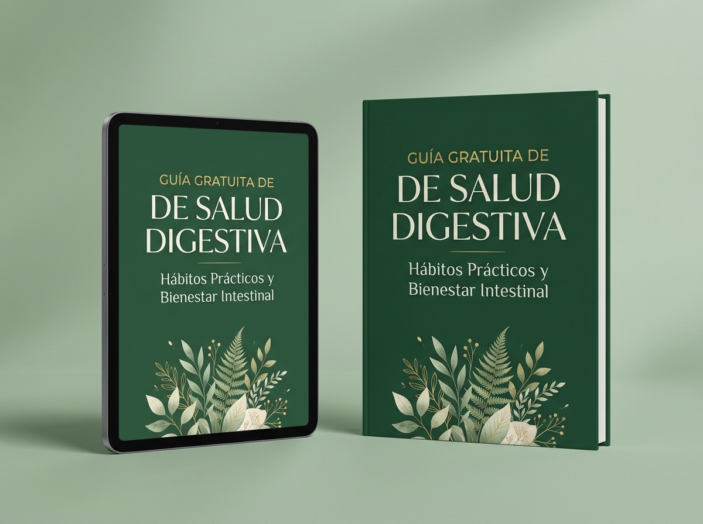
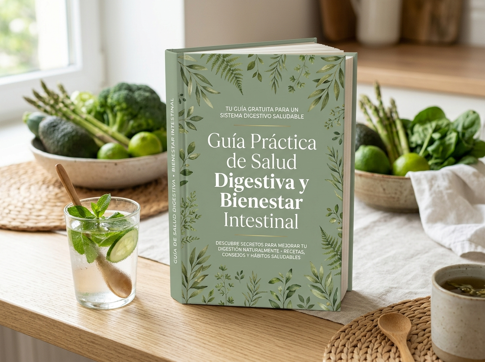
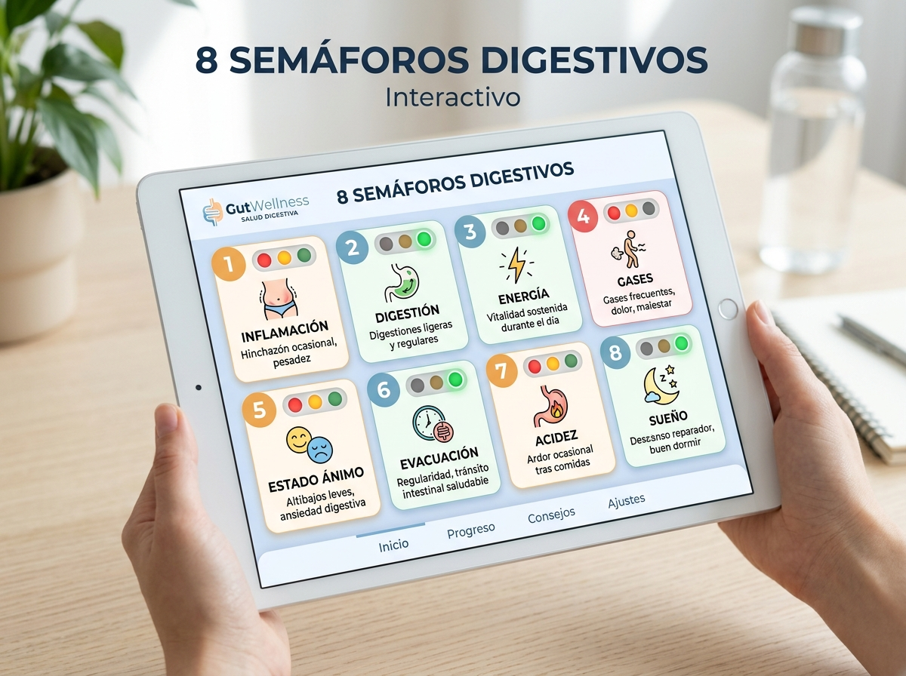
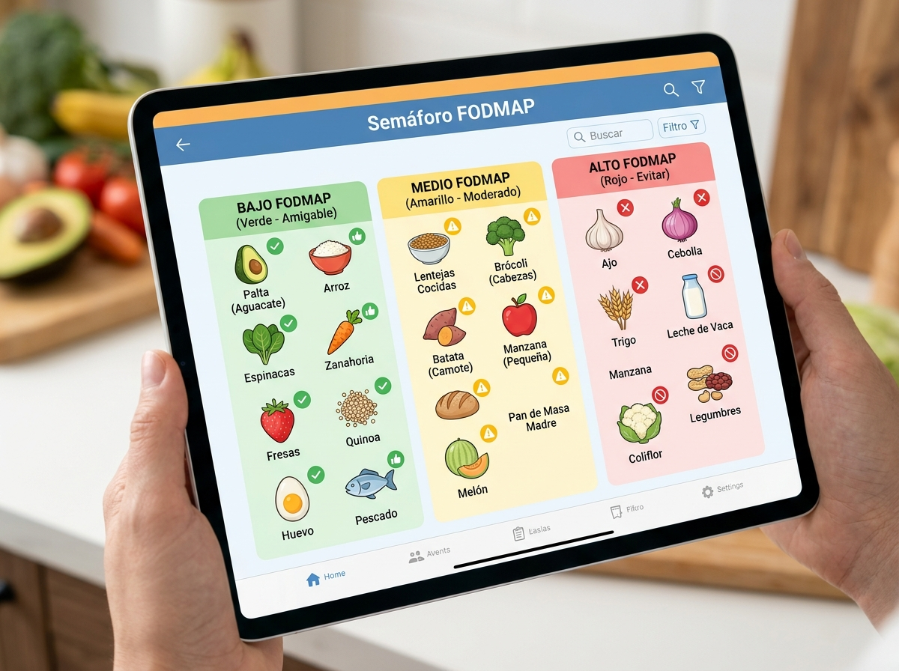
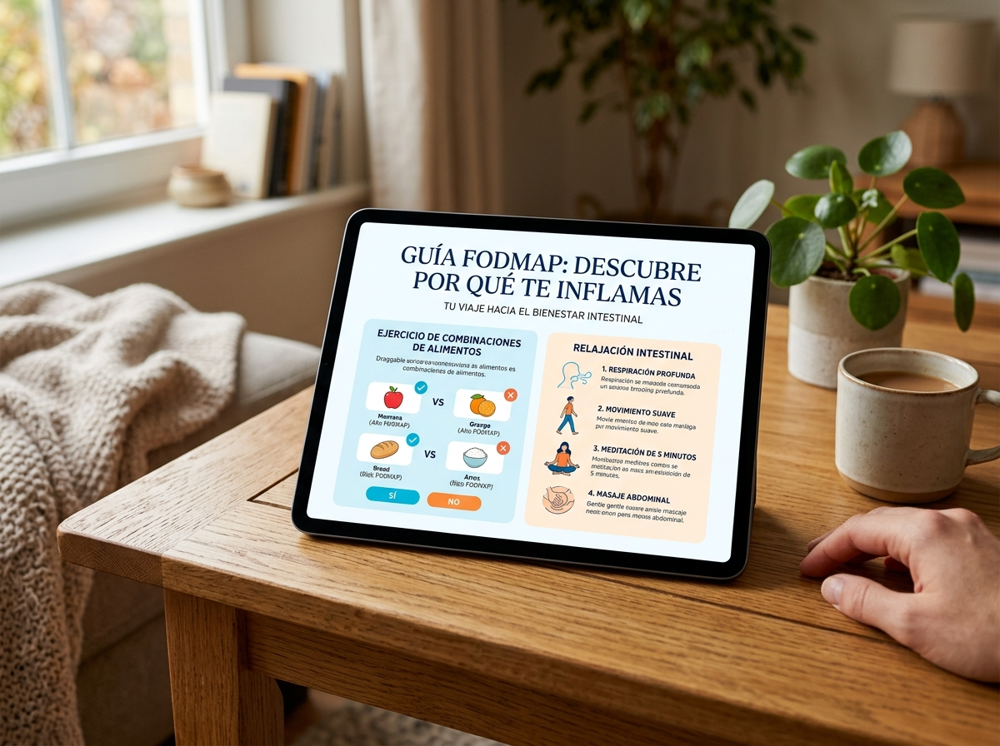

📓 FORMATO DIGITAL & IMPRESIBLE

Vista previa HD
Diario Digestivo
Registra lo que comes y cómo te sientes para entender tu propio patrón.
Descubre una guía práctica y gratuita para comprender mejor tus hábitos, tu alimentación y tu bienestar digestivo, y comenzar a hacer cambios con mayor claridad.

✨ 100% GratuitoSabes que quieres cuidar más de ti, pero entre tanta información, consejos y recomendaciones, a veces es difícil saber por dónde empezar.
Sientes que hay demasiados aspectos por atender y te cuesta decidir cuál es el primer paso ideal.
Cansancio ante consejos confusos y modas extremas que no se adaptan a tu estilo de vida real.
Inicias con entusiasmo pero la falta de una estructura clara hace que vuelvas a las rutinas anteriores.
Buscas herramientas amables, realistas y sencillas de incorporar día con día en tu rutina.
Un recurso visual y práctico diseñado para darte claridad desde la primera lectura.
Ideas y ejercicios sencillos para observar tus rutinas cotidianas sin juzgarte y mejorar tu día.
Conceptos prácticos e inspiradores relacionados con tus hábitos alimentarios y elecciones diarias.
Información clara para comprender mejor esta dimensión fundamental de tu salud física e inmunidad.
Herramientas sencillas para comenzar a estructurar tu día con calma y sin abrumamiento.
Preguntas guía para observar tus propios avances y escuchar las necesidades de tu cuerpo.
Acciones concretas que puedes implementar hoy mismo para avanzar a tu propio ritmo.

Diseñado especialmente para darte el primer impulso hacia un estilo de vida más equilibrado y saludable.
Herramientas descargables para que observes cómo reacciona tu digestión día a día.

Registra lo que comes y cómo te sientes para entender tu propio patrón.

Uno para cada señal, para que identifiques en qué color está tu cuerpo.

Identifica qué alimentos pueden estar provocando tus gases.

Conoce qué alimentos le dan descanso a tu digestión, cuáles conviene limitar y un ejercicio para revisar tus combinaciones.
Vive Sano nace desde una visión de bienestar basada en la educación, la conciencia y la construcción de hábitos que puedan integrarse a la vida cotidiana de forma amigable y sostenible.
A través de recursos claros, prácticos y libres de presiones extremas, busco brindarte las herramientas necesarias para que descubras tu propio camino hacia el equilibrio y la salud integral.
Resolvemos tus dudas sobre el acceso y contenido de la guía digital.
Sí, la guía es 100% gratuita. Solo necesitas ingresar tu nombre y correo electrónico para recibir el enlace directo de descarga.
Al registrarte, recibirás un mensaje de correo electrónico inmediato con el botón para descargar la guía en formato PDF de alta calidad.
¡Totalmente! El diseño PDF está optimizado para leerse cómodamente tanto en teléfonos móviles como en tablets y computadoras.
No, para nada. La guía está redactada en un lenguaje claro, sencillo y práctico para que cualquier persona pueda aplicarla de inmediato.
Está concebida para una lectura ligera y fluida de unos 10 a 15 minutos, repleta de listas de verificación y pasos prácticos.
No. El contenido de la guía es estrictamente educativo y de bienestar general. No sustituye la consulta o diagnóstico de un profesional de la salud.
Ingresa tus datos para recibir tu enlace de descarga en formato PDF directamente en tu correo.
Descarga gratuitamente la guía de Vive Sano por Gloria Molina y comienza a explorar nuevas herramientas para tu día a día.
QUIERO MI GUÍA GRATIS